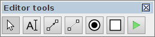

help:editor_tools_panel
Editor tools
The Editor tools panel contains the frequently accessed tools for capturing, modification and simulation of the graph models.

Generic tools
Some of the tools are implemented in the core of Workcraft and are available in all the plugins. Thes include selection, connection and text note tools.
![[S] Select](editor_tools-select.png "[S] Select") - selection tool
- selection tool
- a tool selecting, moving, deleting, grouping, the model elements. This tool can also be activated by pressing S. When the selection tool is active you can select the graph elements and modify them as follows.- Click a graph element to select it. Outline a rectangular area to select several elements. Outline from-right-to-left for adding fully covered elements and from-left-to-right for adding any touched elements.
- Hold Shift to include elements into selection and Ctrl to exclude elements from selection.
- Press Ctrl+A to select all components (Edit→Select all). Press the exclamation mark to inverse the selection (Edit→Inverse selection). Press Esc to resets the selection (Edit→Deselect).
- Selected components can be removed by pressing Delete (Edit→Delete), cut by pressing Ctrl+X combination of keys (Edit→Cut), copied by pressing Ctrl+C keys (Edit→Copy), and a previously copied part of a model may be inserted by pressing Ctrl+V combination of keys (Edit→Paste).
- Double click inside a group to enter it (same action as Page↑). Double-click outside the current group to go one level up (same action as Page↓).
- Use left mouse button or ←, ↑, →, ↓ to move selected components.
![[N] Text Note](editor_tools-text_note.png "[N] Text Note") - text note generator
- text note generator
- a tool for creating textual comments. This tool can also be activated by pressing N. When this tool is active click on the graph editor area to create a new textual comment.
![[C] Connect](editor_tools-connect.png "[C] Connect") - connection tool
- connection tool
- a tool for connecting the model nodes with arcs. This tool can also be activated by pressing C. When the connection tool is active, click on the source node to initiate a connection, then click on the destination node to complete the connection. You can hold Ctrl key to connect nodes in continues mode, so that each destination node becomes a source node for the next connection.
Specific tools
Most of the tools are model-specific and are implemented by the corresponding plugin. For example, the Directed Graph plugin implements a basic vertex generator tool while the Petri net plugin implements place generator, transition generator and simulation tools.
![[V] Vertex](editor_tools-vertex.png "[V] Vertex") - vertex generator
- vertex generator
- a tool for creating a vertex of a directed graph. This tool can also be activated by pressing V.
![[P] Place](editor_tools-place.png "[P] Place") - place generator
- place generator
- a tool for creating a place node of a Petri net. This tool can also be activated by pressing P.
![[T] Transition](editor_tools-transition.png "[T] Transition") - transition generator
- transition generator
- a tool for creating a transition node of a Petri net. This tool can also be activated by pressing T.
![[M] Simulate](editor_tools-simulate.png "[M] Simulate") - simulation tool
- simulation tool
- a tool for simulating the Petri net model. This tool can also be activated by pressing M.